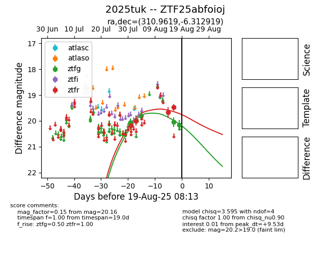

Target 2025tuk at 2025-08-19 08:13, see:
FINK: fink-portal.org/2025tuk
Lasair: lasair-ztf.lsst.ac.uk/objects/2025tuk
ALeRCE: alerce.online/object/2025tuk
TNS: wis-tns.org/object/2025tuk
YSE: ziggy.ucolick.org/yse/transient_detail/2025tuk
alt names
ZTF25abfoioj (ztf,fink)
2025tuk (tns,yse)
coordinates:
equatorial (ra, dec) = (310.9619,-6.31292)
galactic (l, b) = (40.4447,-27.82839)
photometry
last ztfg=20.16, ztfr=19.47
5 ztfg, 4 ztfr detections
